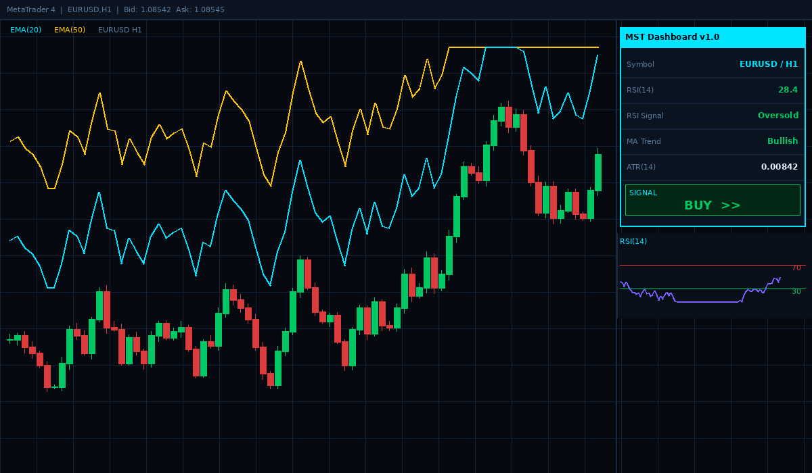

A clean, real-time multi-indicator dashboard for MetaTrader 4 & 5. RSI + Moving Average trend + ATR volatility — all in one panel with a combined signal score.

// What's Inside
Displays the current RSI value with color-coded feedback. Green when oversold (potential buy), red when overbought (potential sell). Configurable levels (default 70/30).
Compares Fast EMA vs Slow EMA and current price position. Outputs: Strong Bull, Bullish, Bearish, Strong Bear or Ranging — always with clear color coding.
Shows the current Average True Range value so you can gauge market volatility at a glance. Useful for position sizing and stop-loss placement.
Aggregates all signals into a single score. When RSI, MA trend and price action align — the panel shows a clear BUY or SELL signal in large text. No signal when mixed.
// Setup Guide
Click "Request Free Download" and send us a quick email. We'll reply with the .mq4 or .mq5 source file within 24 hours.
Open the file in MetaEditor (F4 in MT4/MT5), press Compile (F7). The indicator will appear in your Navigator panel automatically.
Drag the MST Dashboard from Navigator to any chart. Customize RSI period, MA periods and colors in the input settings. Done!
// Technical Details
| Indicator Type | Chart Overlay (Window 0) |
| Platform | MetaTrader 4 & MetaTrader 5 |
| Language | MQL4 (.mq4) + MQL5 (.mq5) |
| Chart Window | Main chart window |
| RSI Source | Close price (configurable) |
| MA Type | Exponential Moving Average (EMA) |
| Default RSI Period | 14 |
| Default Fast MA | 20 |
| Default Slow MA | 50 |
| Default ATR Period | 14 |
| Panel Position | Configurable (X/Y offset) |
| Colors | Fully customizable |
| Price | FREE |
| License | Personal use |
Send us a quick email and we'll reply with the source file for MT4 and/or MT5.
No registration required.